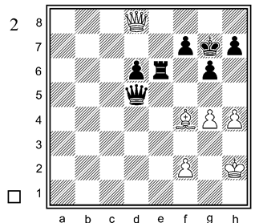

Урок 3: Тактические приёмы
Завлечение
Завлечение — это приём, когда соперника вынуждают пойти фигурой на невыгодное поле. Обычно это делают жертвой.
Жертвуем слона дабы король оказался в невыгодным положении в h6 и с ходом ферзя ставим мат(Qf8#)
Отвлечение
Отвлечение — это когда защитную фигуру заставляют уйти с важного поля, после чего становится возможен удар.

C ходом Re1-t8+ жертвуем ладью потому, что мы могли бы ставить мат в Qc2-h7#, но конь держит его. Берем и вынуждаем коня в другое место и наконец ставим мат(Re8+;Ke8,Qh7#).
Сквозное нападение
Сквозное нападение — это атака, при которой фигура бьёт сначала более ценную цель, а затем ту, что стояла за ней.

Уничтожение защиты
Уничтожение защиты — это приём, при котором защитную фигуру убирают, чтобы затем взять незащищённую цель.

Король мог бы съесть ледью черных но конь его защищяет и единственный хороший ход - бить коня с последующим шахом, вынуждая черных разобраться с шахом, чтобы съесть ладью беззащитного после.